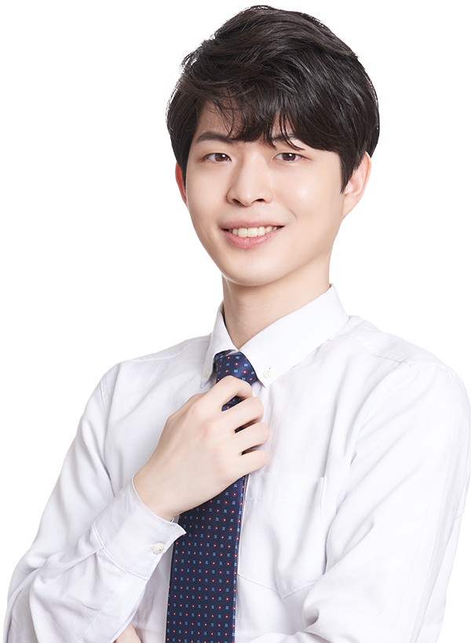
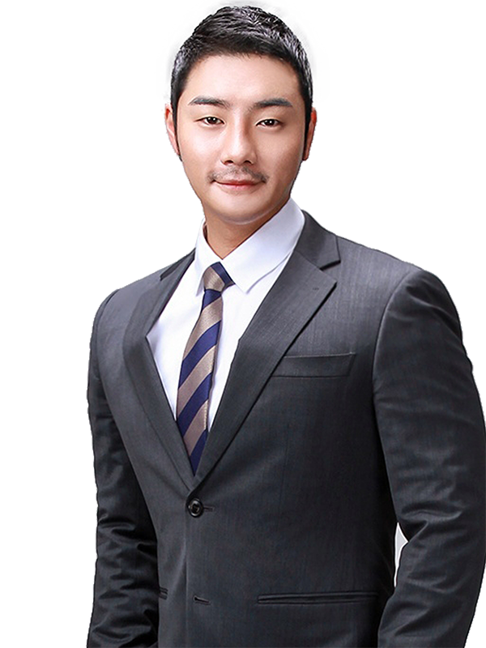
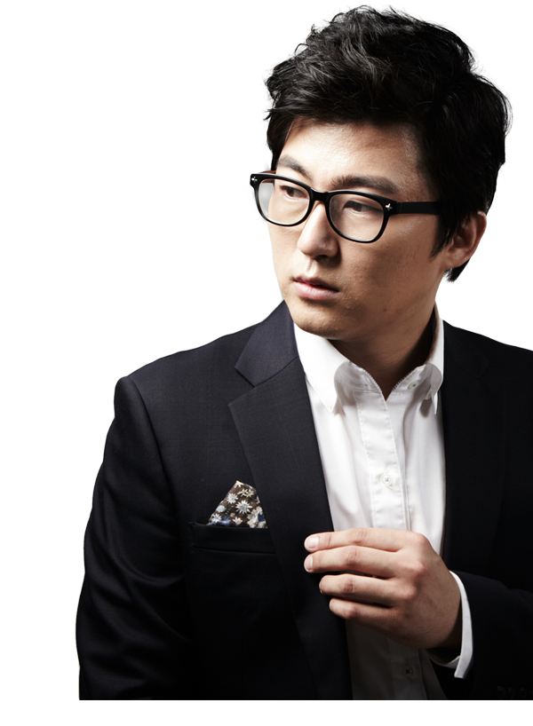

대치에스 선생님
대치에스학원의 실력있는 선생님들을 소개합니다.
국어

수학
-
최영철 선생님
Choi Youngchul
-
최정민 선생님
Choi Jungmin
-
박민성 선생님
Park Minseong
-
박성종 선생님
Park Seongjong
-
이기준 선생님
Lee Kijun
-
구자룡 선생님
Gu Jaryong
-
김용훈 선생님
Kim Yonghoon
-
박재호 선생님
Park Jaeho
-
정일성 선생님
Jung Ilsung
-
박기왕 선생님
Park Kiwang
-
이형호 선생님
Lee Hyungho
-
김영준 선생님
Kim Yeongjun
-
전은정 선생님
Jeon Eunjung
-
이정철 선생님
Lee Jeongcheol
-
박성현 선생님
Park Seonghyeon
-
윤여필 선생님
Yoon Yeopil
-
유승범 선생님
Yoo Seungbum
-
이정훈 선생님
Lee Junghoon